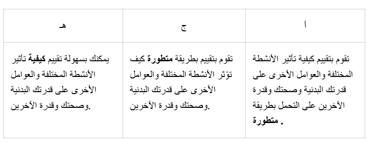

مقدمة
الصحة يمكن أن تعني أشياء مختلفة، وعادةً ما نقسم صحتنا إلى صحة جسدية، نفسية، واجتماعية. تتأثر الصحة بما تأكله وكيف تتحرك. في هذا القسم، ستتعلم أمثلة على كيفية وماذا يمكنك أن تأكل لتؤثر بشكل إيجابي على صحتك.
قضية:
- لفهم كيف يمكن لما تأكله أن يؤثر على صحتك ورفاهتك
- لمعرفة العناصر الغذائية التي يحتاجها الجسم والوظائف التي تؤديها
- لفهم كيفية وماذا تأكل اعتمادًا على مدى نشاطك.
المحتوى المركزي
يغطي القسم المحتوى الرئيسي التالي:
- تخطيط وتنفيذ الأنشطة المختلفة بناءً على تأثيرها على جوانب مختلفة من القدرة البدنية وجوانب مختلفة من الصحة.
معايير التصنيف
المفاهيم في هذا القسم
- العناصر الغذائية
- الاسْتِقْلاب
- توازن الطاقة
- سعرات حرارية
- نموذج اللوحة
- دائرة الطعام